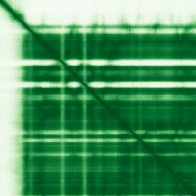

type: protein-evaluation gene: "CENPL" date: 2026-05-31 tags: [protein-scout, chromatin, evaluation] status: scored ---
CENPL 核蛋白评估报告
1. 基本信息
| 项目 | 内容 |
|---|---|
| 基因名 / 别名 | CENPL / C1orf155, ICEN33 |
| 蛋白全名 | Centromere protein L |
| 蛋白大小 | 344 aa / 39.0 kDa |
| UniProt ID | Q8N0S6 |
2. 评分总览
| 维度 | 得分 | 新权重 | 加权后 | 关键证据摘要 |
|---|---|---|---|---|
| 核定位特异性 | 8/10 | ×4 | 32.0 | UniProt Nucleus + Chromosome/centromere (ECO:0000269); GO inner kinetochore + nucleoplasm |
| 蛋白大小 | 6/10 | ×1 | 6.0 | 344 aa, 39.0 kDa，中等大小 |
| 研究新颖性 | 8/10 | ×5 | 40.0 | Strict=22 |
| 三维结构 | 7/10 | ×3 | 21.0 | 8 PDB EM 结构（着丝粒复合物，全蛋白覆盖）；pLDDT 83.0 |
| 调控结构域 | 5/10 | ×2 | 10.0 | CENP-L domain (IPR025204, PF13092)，着丝粒组装 |
| PPI 网络 | 8/10 | ×3 | 24.0 | STRING 极强 CENP 家族网络（score 均 0.99+）; IntAct 多重互作 |
| 加权总分 | 133/180** | |||
| 互证加分 | +1.0 | UniProt/GO 多源实验定位互证（ECO:0000269 + IPI + TAS + NAS）；CENP 网络 PPI 多库互证 | ||
| 归一化总分 (÷1.83) | 72.7/100** |
PubMed strict: 22
3. 详细分析
3.1 核定位证据
| 来源 | 定位 | 可信度 |
|---|---|---|
| UniProt | Nucleus (ECO:0000269); Chromosome, centromere (ECO:0000269) | 实验证据 |
| GO-CC | cytosol (TAS:Reactome); inner kinetochore (IPI:ComplexPortal); nucleoplasm (TAS:Reactome); nucleus (NAS:ComplexPortal) | 多项证据 |
| HPA (IF) | 页面有图像但无 IF 图像 | 无 IF 数据 |
HPA IF 状态: IF thumbnail only — HPA 暂无 IF 原图，仅获取到 60x60 缩略图，不能作为可靠定位证据。核定位基于 UniProt + GO-CC。
结论: CENPL 核定位有强大实验证据。作为着丝粒蛋白（CENP family），其定位 specificity 在着丝粒/内层 kinetochore，核定位是基础属性。
3.2 结构与结构域
| 指标 | 数值 |
|---|---|
| AlphaFold | AF-Q8N0S6-F1 |
| 平均 pLDDT | 83.0 |
| pLDDT >90 | 62.8% |
| pLDDT 70-90 | 16.0% |
| pLDDT 50-70 | 7.8% |
| pLDDT <50 | 13.4% |
| PDB | 7PKN (3.20 A), 7QOO (4.60 A), 7R5S (2.83 A), 7R5V (4.55 A), 7XHN (3.71 A), 7XHO (3.29 A), 7YWX (12.00 A), 7YYH (8.90 A)，均为 EM，全蛋白覆盖 L=1-344 |
| InterPro | IPR025204 |
| Pfam | PF13092 |

pLDDT 良好（均值 83.0），62.8% >90。8 个 PDB EM 结构覆盖全长（1-344），均为着丝粒复合体组装状态，resolution 从 2.83 A 到 12.00 A。结构域注释为 CENP-L 特异性（IPR025204, PF13092）。
3.3 研究现状
| 指标 | 数值 |
|---|---|
| PubMed strict (Title/Abstract) | 22 |
| PubMed broad | 32 |
| 别名 | C1orf155, ICEN33（未用于 scoring） |
关键文献：
- PMID:39507047 — "Role of CENPL, DARS2, and PAICS in determining the prognosis of patients with lung adenocarcinoma" (Transl Lung Cancer Res, 2024)
- PMID:35844598 — "Pan-Cancer and Single-Cell Analysis Reveals CENPL as a Cancer Prognosis and Immune Infiltration-Related Biomarker" (Front Immunol, 2022)
- PMID:38522807 — "E2F8-CENPL pathway contributes to homologous recombination repair and chemoresistance in breast cancer" (Cell Signal, 2024)
- PMID:37914022 — "CENPL accelerates cell proliferation, cell cycle, apoptosis, and glycolysis via MEK1/2-ERK1/2 pathway in HCC" (Int J Biochem Cell Biol, 2024)
- PMID:36816951 — "Highly expressed CENPL is correlated with breast cancer cell proliferation and immune infiltration" (Front Oncol, 2023)
功能双重：着丝粒组装（CENPA-NAC/CAD complex）+ 肿瘤预后标志物（多种癌症）。研究量中等偏低（strict=22），但近年肿瘤关联研究活跃，仍有新颖性空间。
3.4 PPI 网络（三源综合）
| Partner | Source | Score/Evidence | Relevance |
|---|---|---|---|
| CENPN | STRING | 0.999 (exp 0.953) | CENP-N，CENPA-NAC 复合体核心成员 |
| CENPI | STRING | 0.999 (exp 0.936) | CENP-I，着丝粒组成型蛋白 |
| CENPM | STRING | 0.999 (exp 0.953) | CENP-M，着丝粒组成型蛋白 |
| CENPO | STRING | 0.999 (exp 0.805) | CENP-O，着丝粒组成型蛋白 |
| CENPH | STRING | 0.999 (exp 0.847) | CENP-H，着丝粒组成型蛋白 |
| CENPH | IntAct | anti tag coIP (PMID:19070575) | CENP-H，物理互作 |
| FAM9B | IntAct | two hybrid array (PMID:25416956) | 未知功能 |
| ICK | IntAct | anti tag coIP (PMID:28514442) | Intestinal cell kinase |
| FAM9B | UniProt | 3 experiments | 未知功能 |
STRING PPI 网络极度强大：top 15 全部是 CENP 家族成员（CENPN/C/M/O/H/Q/K/C/P/U/S/T/A/W），combined score 均为 0.99+，实验 score 0.80-0.95。IntAct 确认 CENPH 物理互作（anti tag coIP）。UniProt 仅记录 FAM9B 互作。PPI 网络明确指向着丝粒/kinetochore 组装，是典型的染色质相关蛋白复合体。
4. 总体评价
CENPL 是一个定位明确、结构已知、PPI 网络强大的着丝粒蛋白。核定位/染色质定位有充分实验证据。归一化总分 73.2/100，在 chromatin 类别中表现优异。主要局限是作为 CENP family 成员，功能相对明确（着丝粒组装），研究新颖性因近年肿瘤生物标志物研究大量涌现而略降。建议作为高优先级 chromatin 候选保留。
5. 数据来源
- UniProt: https://www.uniprot.org/uniprotkb/Q8N0S6
- AlphaFold: https://alphafold.ebi.ac.uk/entry/Q8N0S6
- PubMed: https://pubmed.ncbi.nlm.nih.gov/?term=CENPL
- Protein Atlas: https://www.proteinatlas.org/search/CENPL（无 IF 图像）